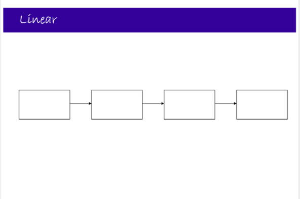
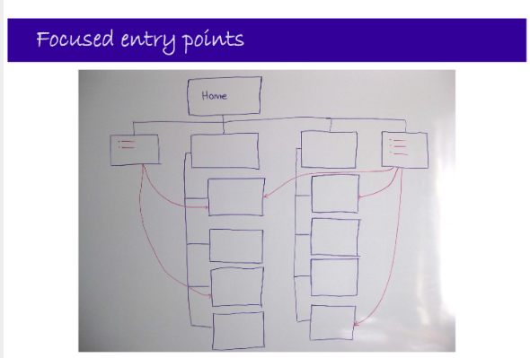

Diagrams of the 4 main patterns proposed by Donna Spencer, as well as her 4 combination patterns and 1 audience-contributed IA pattern.
This presentation was given by Donna Spencer at the IA Summit 2010, in Phoenix, AZ. You can View her presentation on Slideshare and Listen to the Boxes and Arrows Podcast.
Presentation Description:
"We have patterns for buildings, patterns for interaction design, and patterns for software development. But are there patterns for information architecture?
Of course there are - patterns emerge from use, and there certainly are enough information architectures around to identify a set of patterns.
This presentation will describe a wide range of commonly-used information architecture patterns, including hierarchies small and large, different types of database structure, hypertext, subsite models, sites with multiple entry points and ways of combining these (and more that I discover before April).
For each I will describe the core elements of the pattern, discuss the most appropriate uses and show real-world examples.
Understanding the different patterns will help attendees to select the most appropriate structures for their content."
1. Hierarchy
- Good for:
- Small sites – little need for anything else
- When you are guiding, allowing people learn more and more detail
- The relationship between content chunks is naturally hierarchical
- broader and narrower (less and more detail)
|
|
2. Database
- Content chunks are independent
- There are relationships, but not dependent on each other
- Good for:
- Single ‘product’ with consistent structure
- Storing content once, display it in many ways
- VERY expandable structure, unlike hierarchy
|
|
3. Hypertext
- No planned structure (very different from #1 & #2)
- Content is linked together in context
- Good for:
- Content not known in advance
- (i.e. good for creating documentation)
- Developing content domains
- Collaborative work
- Main challenge ‐ knowing what is available to link to
|
|
4. Linear
- Not IA examples:
- Transactional things (wizards, purchase process)
- Breaking articles up like this is NOT a good use.
- Application Workflows
- When does this make sense for an IA content type?
- If you must learn 1 thing 1st before learning a 2nd thing (Sequential).
- But don't lock people into this structure, unless it is CRUCIAL to their task.
|

|
Combinations of 1-4
|
|
5. Simple hierarchy & Simple database
- Very common pattern
- Basic heirarchy + Some sections have structured content
- Good for a wide range of medium sites that have a need for some database‐style content
|
|
6. Catalog
- Particular instance of hierarchy + database (#5)
- Spool's idea
- Pile of content (structured)
- Gallery pages (lets you into content)
- Department pages (lets you into galleries)
- Store pages (lets you into department)
- Like any database, able to be expanded really easily.
- Hierarchical size depends on how much content you have (doesn't have to have store/department pages, but then again, it may have extra levels)
|
|
7. Sub-sites
- Good for big organisations with lots of separate topics/responsibilities
- may have own web team for each sub-site
- especially those needing one visual brand
- example: government
- Subsites may have a consistent structure/pattern or vary
- Need to decide how often people need to cross between subsites
- GOAL of Homepage: help people get to sub-site they seek.
|
|
8. Focused entry points
- Problem: how to organize content
- Organize it one way, BUT then: provide entry points for other people. Examples:
- Audience Entry point
- Specific Topical Entry point
- Task-based Entry point
- Both-And
- Often, users are interested in specific topic, not whole sub-site or entire hierarchy topic.
- Often done manually, not generated by metadata or tags unless its big enough.
- VERY common on University sites.
- Example: gives audiences an overview, instead of having to visit every department page
- Highlights that lead deeper
- Often written manually
- my term: org-chart-itis :)
|

|
9. Hub and Spoke
|
|
Dan Brown's Comment: These are IA
- structural/information patterns, not just
- navigation patterns.
Other Comment: Different people start & end different places in IA
- Structures (Big picture Patterns)
- Problem definition (& Users)
Donna: "It's 5:45 and Beer O'Clock!"